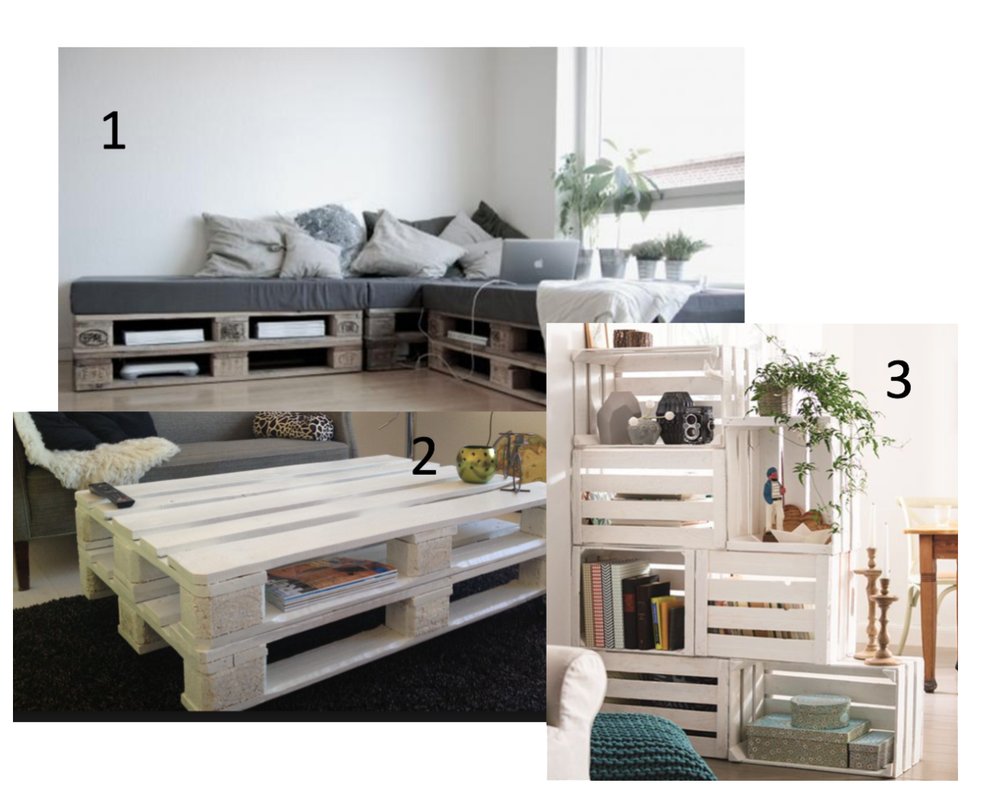

De sociale media kan have en stor påvirkning til hvordan det perfekte hjem skal se ud, men de glemmer at de fleste unge mennesker, som netop bruger de sociale medier er på SU og lever et liv hvor pengene måske er en kamp hver måned.
MEN, hvis man har et lidt kreativ sind eller bare ønsker at ens hjem skal være helt unikt, så er DIY den fedeste løsning på et sejt og kreativ hjem.
Der er mange løsninger og forslag på de sociale medier, hvordan man kan lave sine egne møbler og acces. Jeg vil prøve at vise nogle af løsningerne, som jeg selv synes er ret fede.
Løsninger
1. Her er der blevet lavet en sofa ud af paller. Det er en fed løsning, hvis man kan godt lide at det er lidt råt. Man kan faktisk designe lidt sin egen sofa, fordi man netop selv bestemmer hvor mange paller der skal bruges, opsætningen og stoffet som madressen skal være i. Hvis man alligevel synes det er lidt for råt, kan man altid male pallerne hvide og vælge noget lidt lysere stof på madressen. Men en fed, unik og billig løsning til en sofa.
2. Her bliver pallerne igen brugt, men bare til et sofa bord. Man kan igen selv designe det, både vælge farve og størrelse. Man kan også vælge om der skal være hjul på eller en slags plade på toppen, som fx en glas plade.
Pallerne er altid en god og billig løsning til mange ting. Man kan også bruge pallerne som en senge ramme, natborde, TV borde, sengeborde, udendørsmøbler osv.
3.Det sidste billeder er der brugt nogle gamle kasser, som er sat sammen til et reol system, som egentlig også er en ret sej og unik måde at skabe sin egen reol på. Man kan igen selv lidt designe sit eget reolsystem og man er helt sikker på, at der ikke er andre derude som har præcis den reol, det er da lidt sejt, ikke? Der er flere bloggere og hjemmesider, som har en masse fede løsninger og forslag til at lave sine egne ting.
Tjek lige den her blog ud
Livingonabudget og få en masse inspiration!
XOXO Malou Jeppson
